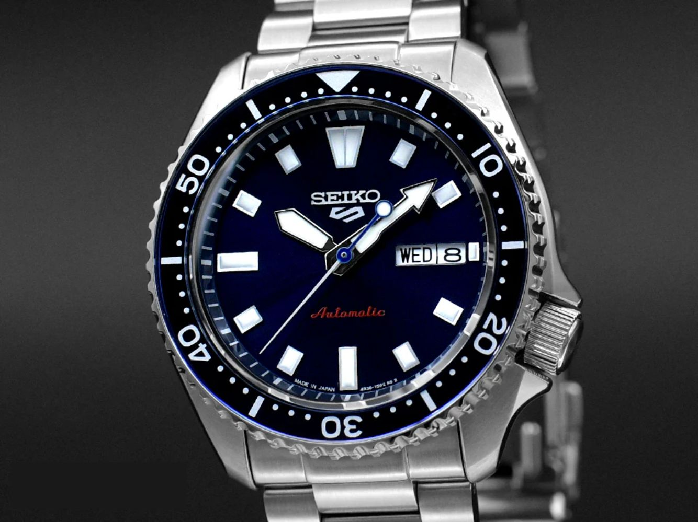
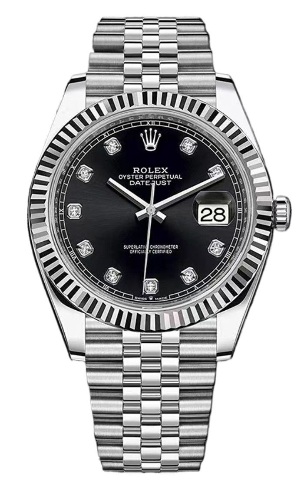
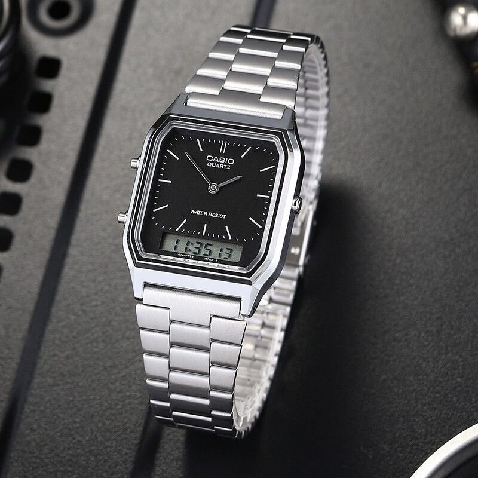

МИР ЧАСОВ
Добро пожаловать в мир часов
Главная |
История часов |
Виды |
Современные технологии
Время — самый ценный ресурс, который невозможно вернуть. Часы помогают нам измерять и ценить каждую минуту.
На протяжении веков они сопровождали человека: от древних солнечных часов до современных умных гаджетов.
Наш сайт расскажет:
📜 Историю появления часов.
⌚ Разнообразие их видов.
🌐 Современные технологии и будущее часового искусства.
Часы — это не только инструмент, но и символ точности, стиля и культуры.
Погрузитесь в увлекательный мир, где каждая стрелка и каждый механизм имеют свою историю.



Если у вас проблемы с настройкой часов,предлагаем посмотреть это видео.
Смотреть видео